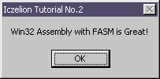

| Sulaiman Chang Personal Website |
|
Tutorial 2 : MessageBox
include '%fasminc%/win32ax.inc'
.data
msgBoxCaption db 'Iczelion Tutorial No.2',0
msgBoxText db 'Win32 Assembly with FASM is Great!',0
.code
start:
invoke MessageBox,NULL,msgBoxText,msgBoxCaption,MB_OK
invoke ExitProcess,0
.end start
Result : |
| Copyright © 2004 Sulaiman Chang. All Rights Reserved. |